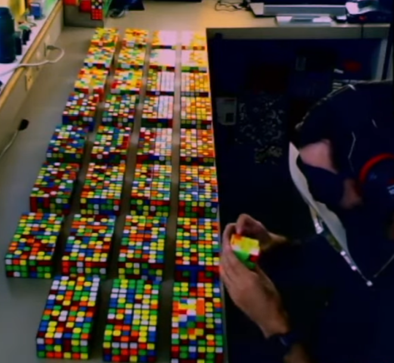

<div class="jeffArticleListPage" id="page_1"><div class="jeffArticleListItem">
    <a href="{pcr/}:{pcr/index.html}" class="jeffArticleLink">
        <div class="jeffSmallArticlePreview">
            <div class="jeffTopicSmall" style="color: var(--biology-topic-color);">Biology</div>
            <h2 class="jeffArticleHeadingSmall">PCR</h2>
            <div class="jeffTeaser">
                How an acid trip, a self-taught microbiologist, and an extremophilic bacterium led to the most important technique in genetic testing.
            </div>
            <div class="jeffDateSmall">September 01, 2026</div>
        </div>
        
    </a>
</div><div class="jeffArticleListItem">
    <a href="{the_shape_of_entropy/}:{the_shape_of_entropy/index.html}" class="jeffArticleLink">
        <div class="jeffSmallArticlePreview">
            <div class="jeffTopicSmall" style="color: var(--physics-topic-color);">Physics and Astronomy</div>
            <h2 class="jeffArticleHeadingSmall">The Shape of Entropy</h2>
            <div class="jeffTeaser">
                It turns out that negative temperature is actually hotter than positive temperature.
            </div>
            <div class="jeffDateSmall">June 14, 2026</div>
        </div>
        
    </a>
</div><div class="jeffArticleListItem">
    <a href="{speedcubing/}:{speedcubing/index.html}" class="jeffArticleLink">
        <div class="jeffSmallArticlePreview">
            <div class="jeffTopicSmall" style="color: var(--other-topic-color);">Culture</div>
            <h2 class="jeffArticleHeadingSmall">Speedcubing</h2>
            <div class="jeffTeaser">
                The only sport dominated by primary schoolers has more events than you think, including one-look multiblind.
            </div>
            <div class="jeffDateSmall">June 07, 2026</div>
        </div>
        
    </a>
</div><div class="jeffArticleListItem">
    <a href="{cryptolography/}:{cryptolography/index.html}" class="jeffArticleLink">
        <div class="jeffSmallArticlePreview">
            <div class="jeffTopicSmall" style="color: var(--computing-topic-color);">Computing</div>
            <h2 class="jeffArticleHeadingSmall">Cryptolography</h2>
            <div class="jeffTeaser">
                How do finite number fields and elliptic curves keep credit card transactions both fast and secure?
            </div>
            <div class="jeffDateSmall">May 31, 2026</div>
        </div>
        
    </a>
</div><div class="jeffArticleListItem">
    <a href="{linus_pauling/}:{linus_pauling/index.html}" class="jeffArticleLink">
        <div class="jeffSmallArticlePreview">
            <div class="jeffTopicSmall" style="color: var(--chemistry-topic-color);">Chemistry</div>
            <h2 class="jeffArticleHeadingSmall">Linus Pauling</h2>
            <div class="jeffTeaser">
                This high school dropout is the only person in history to have won two unshared Nobel Prizes.
            </div>
            <div class="jeffDateSmall">May 24, 2026</div>
        </div>
        
    </a>
</div></div><div class="jeffArticleListPage" id="page_2"><div class="jeffArticleListItem">
    <a href="{the_unreasonable_effectiveness_of_mathematics/}:{the_unreasonable_effectiveness_of_mathematics/index.html}" class="jeffArticleLink">
        <div class="jeffSmallArticlePreview">
            <div class="jeffTopicSmall" style="color: var(--mathematics-topic-color);">Mathematics</div>
            <h2 class="jeffArticleHeadingSmall">The Unreasonable Effectiveness of Mathematics</h2>
            <div class="jeffTeaser">
                What makes mathematics so effective in explaining the world around us?
            </div>
            <div class="jeffDateSmall">May 17, 2026</div>
        </div>
        
    </a>
</div></div>